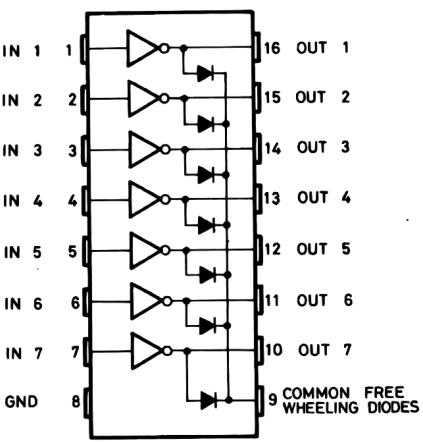
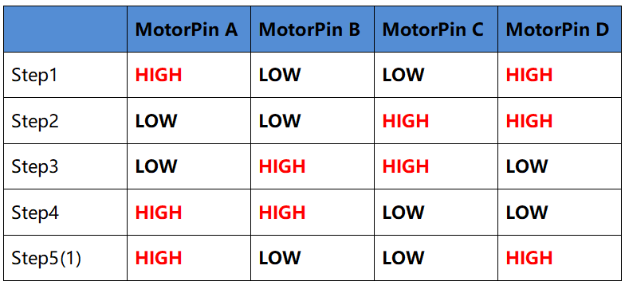

Note
Bonjour, bienvenue dans la communauté des passionnés de SunFounder Raspberry Pi, Arduino et ESP32 sur Facebook ! Plongez au cœur du Raspberry Pi, de l’Arduino et de l’ESP32 avec d’autres passionnés.
Pourquoi rejoindre ?
Support d’experts : Résolvez vos problèmes techniques et après-vente avec l’aide de notre communauté et de notre équipe.
Apprendre et partager : Échangez des astuces et des tutoriels pour améliorer vos compétences.
Aperçus exclusifs : Soyez les premiers à découvrir les nouvelles annonces produits et aperçus.
Réductions spéciales : Profitez de réductions exclusives sur nos nouveaux produits.
Promotions et concours festifs : Participez à des concours et des promotions spéciales pour les fêtes.
👉 Prêt à explorer et créer avec nous ? Cliquez sur [Ici] et rejoignez-nous dès aujourd’hui !
1.3.3 Stepper Motor
Introduction
Les moteurs pas à pas, grâce à leur conception unique, peuvent être contrôlés avec une grande précision sans mécanismes de rétroaction. L’axe d’un moteur pas à pas, monté avec une série d’aimants, est contrôlé par une série de bobines électromagnétiques qui sont chargées positivement et négativement dans une séquence spécifique, le déplaçant précisément vers l’avant ou l’arrière en petits « pas ».
Composants

Principe
Moteur Pas à Pas
Il existe deux types de moteurs pas à pas : unipolaires et bipolaires, et il est très important de savoir quel type vous utilisez. Dans cette expérience, nous utiliserons un moteur pas à pas unipolaire.
Le moteur pas à pas est un moteur à quatre phases qui utilise une alimentation en courant continu unipolaire. Tant que vous alimentez toutes les phases du moteur avec une séquence de synchronisation appropriée, vous pouvez le faire tourner étape par étape. Le schéma d’un moteur pas à pas réactif à quatre phases :

Dans cette figure, au centre du moteur se trouve un rotor - un aimant permanent en forme d’engrenage. Autour du rotor, il y a des dents numérotées de 0 à 5. Plus à l’extérieur, il y a 8 pôles magnétiques, avec chaque paire opposée connectée par un enroulement de bobine. Elles forment ainsi quatre paires de A à D, appelées phases. Il dispose de quatre fils de connexion à brancher sur les interrupteurs SA, SB, SC et SD. Par conséquent, les quatre phases sont en parallèle dans le circuit, et les deux pôles magnétiques d’une phase sont en série.
Voici comment fonctionne un moteur pas à pas à 4 phases :
Lorsque l’interrupteur SB est activé, et que SA, SC et SD sont désactivés, les pôles magnétiques de la phase B s’alignent avec les dents 0 et 3 du rotor. En même temps, les dents 1 et 4 forment des dents décalées avec les pôles des phases C et D. Les dents 2 et 5 forment des dents décalées avec les pôles des phases A et D. Lorsque l’interrupteur SC est activé, et que SB, SA et SD sont désactivés, le rotor tourne sous l’effet du champ magnétique de l’enroulement de la phase C, faisant aligner les dents 1 et 4 avec les pôles magnétiques de la phase C. Cette situation se répète en continu. En activant les phases A, B, C et D à tour de rôle, le rotor tourne dans l’ordre des phases A, B, C et D.

Le moteur pas à pas à quatre phases a trois modes de fonctionnement : quatre étapes simples, quatre étapes doubles et huit étapes. L’angle de pas pour les modes simple et double quatre étapes est le même, mais le couple moteur est plus faible en simple quatre étapes. L’angle de pas du mode huit étapes est la moitié de celui des autres modes, ce qui permet d’améliorer la précision de contrôle tout en maintenant un couple moteur élevé.
Le stator du moteur pas à pas que nous utilisons possède 32 pôles magnétiques, donc un tour complet nécessite 32 pas. L’arbre de sortie du moteur pas à pas est connecté à un réducteur avec un rapport de réduction de 1/64. Ainsi, pour que l’arbre de sortie effectue un tour complet, il faut 32 * 64 = 2048 pas.
ULN2003
Pour utiliser le moteur dans le circuit, une carte pilote est nécessaire. Le pilote de moteur pas à pas ULN2003 est un circuit inverseur à 7 canaux. C’est-à-dire que lorsque la broche d’entrée est à haut niveau, la broche de sortie de l’ULN2003 est à bas niveau, et vice versa. Si nous fournissons un haut niveau à IN1, et un bas niveau à IN2, IN3 et IN4, alors la sortie OUT1 sera à bas niveau, et toutes les autres sorties seront à haut niveau. La structure interne de la puce est illustrée ci-dessous.
Le pilote de moteur pas à pas constitué par la puce ULN2003 et 4 LEDs est illustré comme suit. Sur la carte, les broches IN1, IN2, IN3 et IN4 servent d’entrée et les quatre LEDs A, B, C, D indiquent l’état des broches d’entrée. De plus, les broches OUT1, OUT2, OUT3 et OUT4 sont connectées aux interrupteurs SA, SB, SC et SD du pilote de moteur pas à pas. Lorsque la valeur d’IN1 est définie à haut niveau, la LED A s’allume, l’interrupteur SA est activé, et le moteur pas à pas tourne d’un pas. Ce processus se répète à l’infini. Ainsi, en fournissant au moteur pas à pas une séquence de synchronisation spécifique, il tournera étape par étape. L’ULN2003 est utilisé ici pour fournir des séquences de synchronisation particulières au moteur pas à pas.

Schéma électrique

Procédures Expérimentales
Étape 1: Construisez le circuit.

Pour les Utilisateurs du Langage C
Étape 2: Accédez au dossier du code.
cd ~/davinci-kit-for-raspberry-pi/c/1.3.3/
Étape 3: Compilez le code.
gcc 1.3.3_StepperMotor.c -lwiringPi
Étape 4: Exécutez le fichier exécutable.
sudo ./a.out
Lorsque le code s’exécute, le moteur pas à pas tournera dans le sens horaire ou antihoraire selon votre entrée “a” ou “c”.
Note
Si cela ne fonctionne pas après l’exécution ou si un message d’erreur apparaît : "wiringPi.h: Aucun fichier ou répertoire de ce type", veuillez vous référer à C code is not working?.
Code
#include <stdio.h>
#include <wiringPi.h>
const int motorPin[] = {1, 4, 5, 6};
int rolePerMinute = 15;
int stepsPerRevolution = 2048;
int stepSpeed = 0;
void rotary(char direction){
if(direction == 'c'){
for(int j=0;j<4;j++){
for(int i=0;i<4;i++)
{digitalWrite(motorPin[i],0x99>>j & (0x08>>i));}
delayMicroseconds(stepSpeed);
}
}
else if(direction =='a'){
for(int j=0;j<4;j++){
for(int i=0;i<4;i++)
{digitalWrite(motorPin[i],0x99<<j & (0x80>>i));}
delayMicroseconds(stepSpeed);
}
}
}
void loop()
{
char direction = '0';
while (1)
{
printf("select motor direction a=anticlockwise, c=clockwise: ");
delay(100);
direction=getchar();
if (direction == 'c')
{
printf("motor running clockwise\n");
delay(100);
break;
}
else if (direction == 'a')
{
printf("motor running anti-clockwise\n");
delay(100);
break;
}
else
{
printf("input error, please try again!\n");
delay(100);
}
}
while(1)
{
rotary(direction);
}
}
void main(void)
{
if (wiringPiSetup() == -1)
{
printf("setup wiringPi failed !");
return;
}
for (int i = 0; i < 4; i++)
{
pinMode(motorPin[i], OUTPUT);
}
stepSpeed = (60000000 / rolePerMinute) / stepsPerRevolution;
loop();
}
Explication du Code
int rolePerMinute = 15;
int stepsPerRevolution = 2048;
int stepSpeed = 0;
rolePerMinute : révolutions par minute, la vitesse du moteur pas à pas utilisée dans ce kit doit être comprise entre 0 et 17 RPM.
stepsPerRevolution : le nombre de pas pour chaque tour. Le moteur pas à pas utilisé dans ce kit nécessite 2048 pas par révolution.
stepSpeed : le temps utilisé pour chaque pas. Dans la fonction main(), on attribue les valeurs avec la formule : 「(60000000 / rolePerMinute) / stepsPerRevolution」 (60 000 000 µs = 1 minute).
void loop()
{
char direction = '0';
while (1)
{
printf("select motor direction a=anticlockwise, c=clockwise: ");
direction=getchar();
if (direction == 'c')
{
printf("motor running clockwise\n");
break;
}
else if (direction == 'a')
{
printf("motor running anti-clockwise\n");
break;
}
else
{
printf("input error, please try again!\n");
}
}
while(1)
{
rotary(direction);
}
}
La fonction loop() est divisée en deux parties (entre deux while(1)) :
La première partie récupère la valeur de la touche. Quand “a” ou “c” est reçu, on quitte la boucle et on arrête l’entrée.
La seconde partie appelle rotary(direction) pour faire tourner le moteur pas à pas.
void rotary(char direction){
if(direction == 'c'){
for(int j=0;j<4;j++){
for(int i=0;i<4;i++)
{digitalWrite(motorPin[i],0x99>>j & (0x08>>i));}
delayMicroseconds(stepSpeed);
}
}
else if(direction =='a'){
for(int j=0;j<4;j++){
for(int i=0;i<4;i++)
{digitalWrite(motorPin[i],0x99<<j & (0x80>>i));}
delayMicroseconds(stepSpeed);
}
}
}
Pour faire tourner le moteur pas à pas dans le sens horaire, l’état de niveau des broches moteur (motorPin) est présenté dans le tableau ci-dessous :

L’écriture des niveaux des broches motorPin est réalisée à l’aide d’une double boucle for.
Étape 1, j=0, i=0~4.
motorPin[0] sera écrit en niveau haut（10011001&00001000=1）
motorPin[1] sera écrit en niveau bas（10011001&00000100=0）
motorPin[2] sera écrit en niveau bas（10011001&00000010=0）
motorPin[3] sera écrit en niveau haut（10011001&00000001=1）
Étape 2, j=1, i=0~4.
motorPin[0] sera écrit en niveau haut（01001100&00001000=1）
motorPin[1] sera écrit en niveau bas（01001100&00000100=1）
etc.
Pour faire tourner le moteur pas à pas dans le sens antihoraire, l’état de niveau des broches moteur est présenté dans le tableau suivant.

Étape 1, j=0, i=0~4.
motorPin[0] sera écrit en niveau haut（10011001&10000000=1）
motorPin[1] sera écrit en niveau bas（10011001&01000000=0）
Étape 2, j=1, i=0~4.
motorPin[0] sera écrit en niveau haut（00110010&10000000=0）
motorPin[1] sera écrit en niveau bas（00110010&01000000=0）
etc.
Pour les Utilisateurs de Python
Étape 2: Accédez au dossier du code.
cd ~/davinci-kit-for-raspberry-pi/python/
Étape 3: Exécutez le fichier exécutable.
sudo python3 1.3.3_StepperMotor.py
Lorsque le code s’exécute, le moteur pas à pas tournera dans le sens horaire ou antihoraire selon votre entrée “a” ou “c”. Explication du Code
Note
Vous pouvez Modifier/Réinitialiser/Copier/Exécuter/Arrêter le code ci-dessous. Mais avant cela, vous devez accéder au chemin du code source, tel que davinci-kit-for-raspberry-pi/python.
import RPi.GPIO as GPIO
from time import sleep
motorPin = (18,23,24,25)
rolePerMinute =15
stepsPerRevolution = 2048
stepSpeed = (60/rolePerMinute)/stepsPerRevolution
def setup():
GPIO.setwarnings(False)
GPIO.setmode(GPIO.BCM)
for i in motorPin:
GPIO.setup(i, GPIO.OUT)
def rotary(direction):
if(direction == 'c'):
for j in range(4):
for i in range(4):
GPIO.output(motorPin[i],0x99>>j & (0x08>>i))
sleep(stepSpeed)
elif(direction == 'a'):
for j in range(4):
for i in range(4):
GPIO.output(motorPin[i],0x99<<j & (0x80>>i))
sleep(stepSpeed)
def loop():
while True:
direction = input('select motor direction a=anticlockwise, c=clockwise: ')
if(direction == 'c'):
print('motor running clockwise\n')
break
elif(direction == 'a'):
print('motor running anti-clockwise\n')
break
else:
print('input error, please try again!')
while True:
rotary(direction)
def destroy():
GPIO.cleanup()
if __name__ == '__main__':
setup()
try:
loop()
except KeyboardInterrupt:
destroy()
Explication du Code
rolePerMinute =15
stepsPerRevolution = 2048
stepSpeed = (60/rolePerMinute)/stepsPerRevolution
rolePerMinute : révolutions par minute, la vitesse du moteur pas à pas dans ce kit devrait être comprise entre 0 et 17 RPM.
stepsPerRevolution : le nombre de pas pour chaque tour, le moteur pas à pas de ce kit nécessite 2048 pas par révolution.
stepSpeed : le temps utilisé pour chaque pas, et nous leur attribuons les valeurs suivantes :「(60 / rolePerMinute) / stepsPerRevolution」(60s = 1 minute).
def loop():
while True:
direction = input('select motor direction a=anticlockwise, c=clockwise: ')
if(direction == 'c'):
print('motor running clockwise\n')
break
elif(direction == 'a'):
print('motor running anti-clockwise\n')
break
else:
print('input error, please try again!')
while True:
rotary(direction)
La fonction loop() est divisée en deux parties (situées dans deux while(1)) :
La première partie consiste à récupérer la valeur de la touche. Lorsque “a” ou “c” est obtenu, on quitte la boucle et arrête l’entrée.
La seconde partie appelle la fonction rotary(direction) pour faire tourner le moteur pas à pas.
def rotary(direction):
if(direction == 'c'):
for j in range(4):
for i in range(4):
GPIO.output(motorPin[i],0x99>>j & (0x08>>i))
sleep(stepSpeed)
elif(direction == 'a'):
for j in range(4):
for i in range(4):
GPIO.output(motorPin[i],0x99<<j & (0x80>>i))
sleep(stepSpeed)
Pour faire tourner le moteur pas à pas dans le sens horaire, l’état de niveau des broches motorPin est présenté dans le tableau suivant :

Par conséquent, l’écriture des niveaux des broches motorPin est réalisée à l’aide d’une boucle for à deux niveaux.
Dans Étape 1, j=0, i=0~4.
motorPin[0] sera en niveau haut（10011001&00001000=1）
motorPin[1] sera en niveau bas（10011001&00000100=0）
motorPin[2] sera en niveau bas（10011001&00000010=0）
motorPin[3] sera en niveau haut（10011001&00000001=1）
Dans Étape 2, j=1, i=0~4.
motorPin[0] sera en niveau haut（01001100&00001000=1）
motorPin[1] sera en niveau bas（01001100&00000100=1）
et ainsi de suite.
Pour faire tourner le moteur pas à pas dans le sens antihoraire, l’état de niveau des broches motorPin est présenté dans le tableau suivant.
Dans Étape 1, j=0, i=0~4.
motorPin[0] sera en niveau haut（10011001&10000000=1）
motorPin[1] sera en niveau bas（10011001&01000000=0）
Dans Étape 2, j=1, i=0~4.
motorPin[0] sera en niveau haut（00110010&10000000=0）
motorPin[1] sera en niveau bas（00110010&01000000=0）
et ainsi de suite.
Image de Résultat